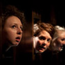
![[Play without a Title]](./collage/lorca3.jpg "Play without a Title")
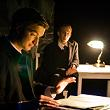 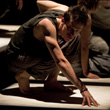
![[Discords]](./collage/discords3.jpg "Discords")
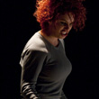 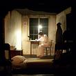
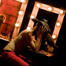 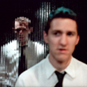 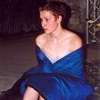
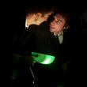 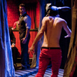
![[Phaedra's Love]](./collage/phaedra4.jpg "Phaedra's Love")
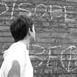 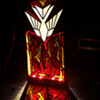 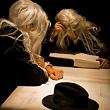
Fail Better Productions is a growing collective of young theatre artists that strive for intensity and detail in textually rich and visually arresting performance.
We performed a special double-bill of Diary of a Madman and Discords to celebrate our tenth anniversary at Warwick Arts Centre.
Please watch this new film about our Residency at The CAPITAL Centre:
Watch it nowFriday 30th April to Saturday 1st May
24 hours of lively action, participation and celebration surrounded a unique cycle of performance projects at Warwick University's CAPITAL Centre.
We honoured the 20th anniversary of the author's death through a series of events in our 2009 season. Stasis (Rough for Theatre II and Ohio Impromptu by Samuel Beckett) was revived at Oxford Playhouse with performances last month.
At Warwick University, our student ensemble engaged with the BeckettLab practice-as-research project and the academic symposium Beckett and the Brain.
The New Statesman have published the article Translating Lorca discussing our recent production of Play Without a Title alongside the Belgrade's The House of Bernarda Alba.